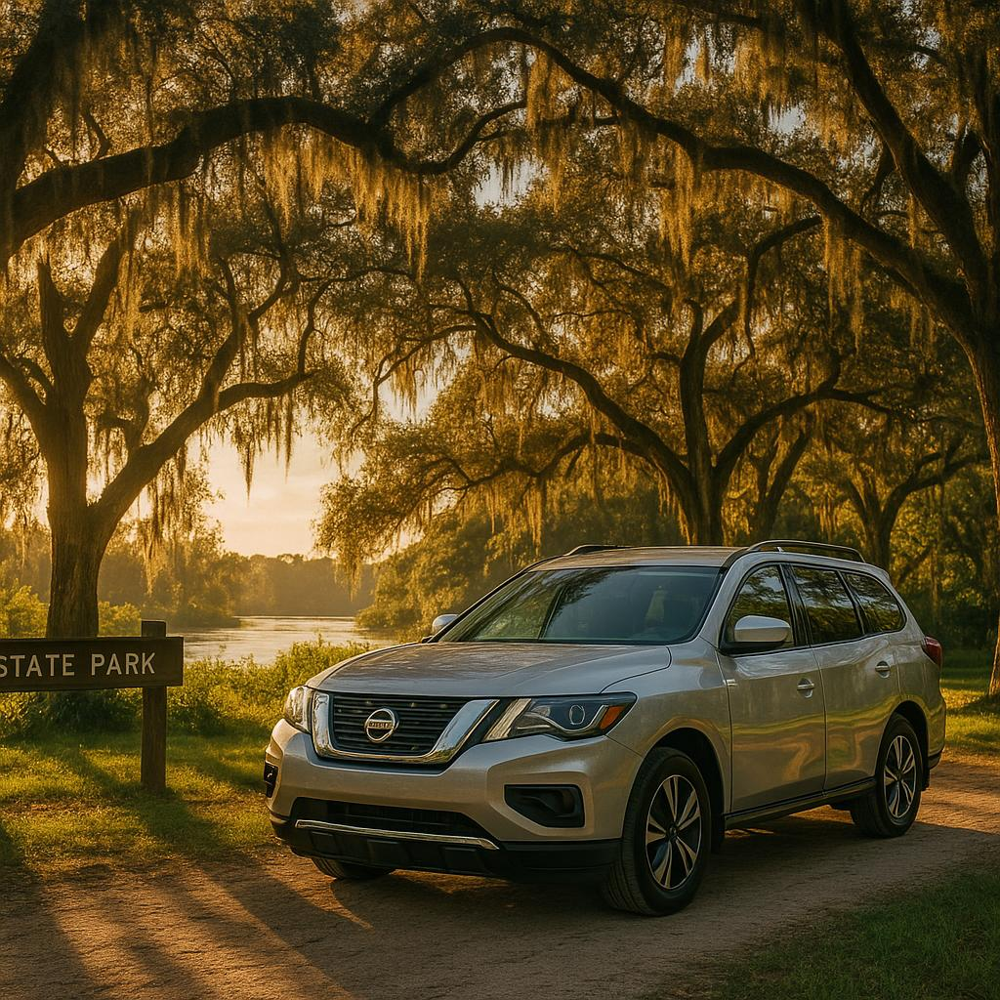

Travel Guide · June 16, 2026

Southwest Florida is famous for its beaches, but tucked about an hour north of Fort Myers lies one of the state's most spectacular wild places: Myakka River State Park. At nearly 37,000 acres, it's one of Florida's oldest and largest state parks, and it remains gloriously, stubbornly untamed. Think ancient cypress stands, vast prairie grasslands, wading birds by the hundreds, and — yes — more alligators than you can count.
Whether you're a snowbird looking for something beyond the pool deck, a family craving a genuine outdoor adventure, or a nature lover who came to SWFL for more than just white sand, Myakka delivers in spades. All you need is a reliable set of wheels and an early start.
From the Fort Myers and Cape Coral area, Myakka River State Park is roughly 55–65 miles north — an easy, beautiful drive of about an hour. You'll head up through the quiet ranching communities of eastern Sarasota County, and the scenery shifts noticeably as you leave the coast behind. The park entrance sits along State Road 72 east of Sarasota.
If you're flying in, our team can meet you directly at Fort Myers (RSW) or Punta Gorda (PGD) airports with your rental and have you on the road in minutes — making a Myakka morning trip totally achievable even on your first full day in Florida. We deliver within 50 miles of the Punta Gorda area, so getting a car to you before you hit the highway is seamless.
Pro tip: Leave by 8 a.m. Myakka's wildlife is most active in the cooler morning hours, and the park can fill up on winter weekends.
Myakka packs a remarkable variety of experiences into a single day. Here are the highlights:
A few essentials will make your Myakka day much more comfortable:
The park is open year-round from 8 a.m. until sundown. Winter (November through April) is peak season for both wildlife activity and comfortable temperatures, making it perfect for SWFL visitors during those months.
Myakka pairs beautifully with a few nearby detours if you want to extend the adventure beyond the park gates.
The charming town of Venice is only about 20 minutes west on SR-72 — grab a late lunch on Venice Avenue and hunt for shark teeth on Caspersen Beach before heading south. Alternatively, swing through the small but surprisingly foodie-friendly town of Osprey or Nokomis for a waterfront seafood dinner on your way back.
If you'd rather head straight home to the Cape Coral or Fort Myers area, the return drive down US-41 through North Port and Port Charlotte is a lovely evening cruise with plenty of local diner stops along the way. Having your own rental car — with room for all your gear, a wet kayak paddle, and a cooler — makes the whole day flow on your schedule, not someone else's.
Myakka River State Park is the kind of place that reminds you why people fall in love with Florida in the first place — not the theme parks, not the outlet malls, but the raw, living, breathing wildness that's still right here if you know where to look. Load up the car, hit the road early, and go find it.